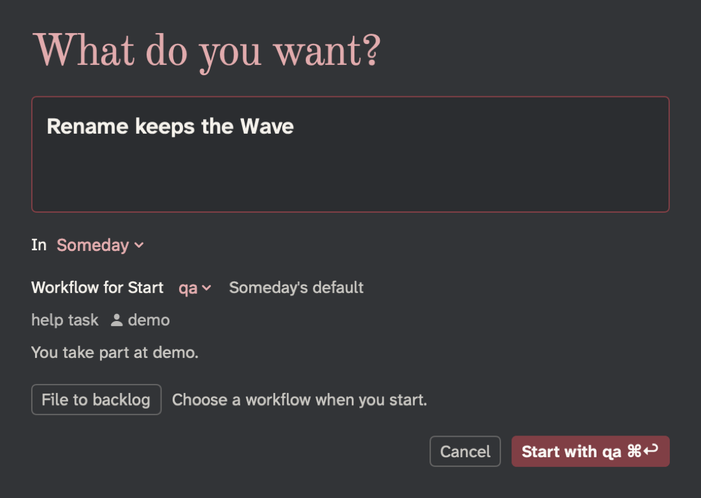
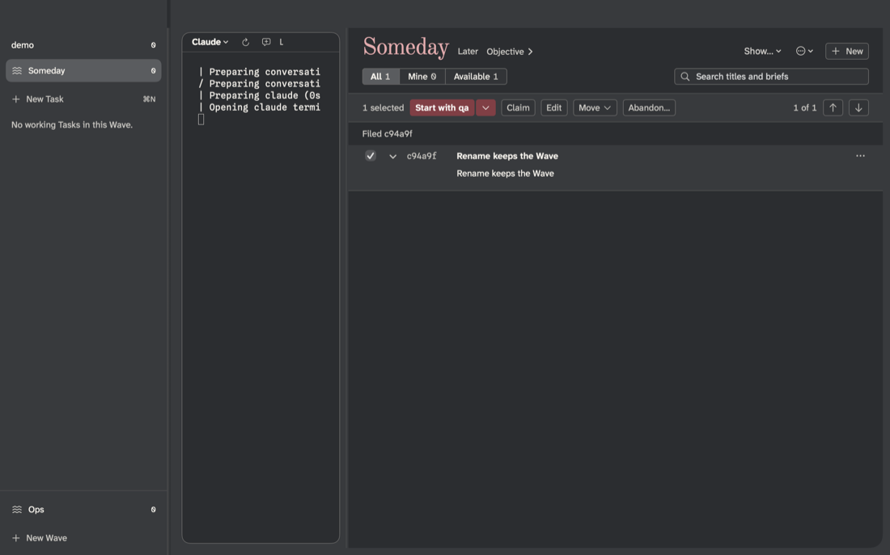
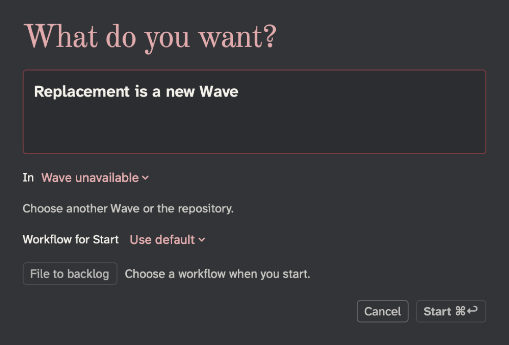
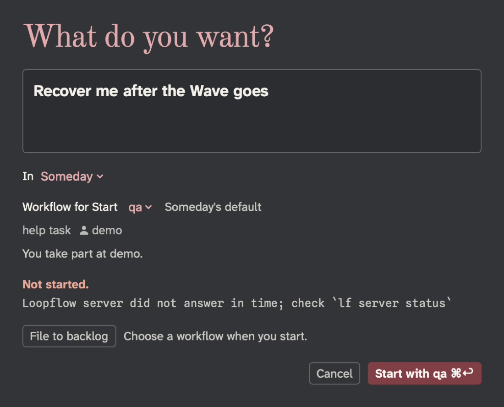
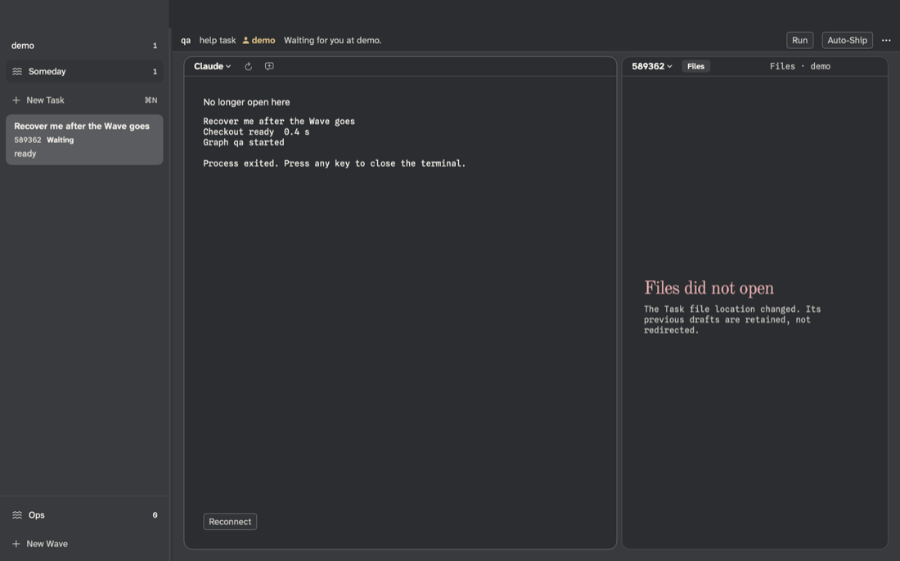
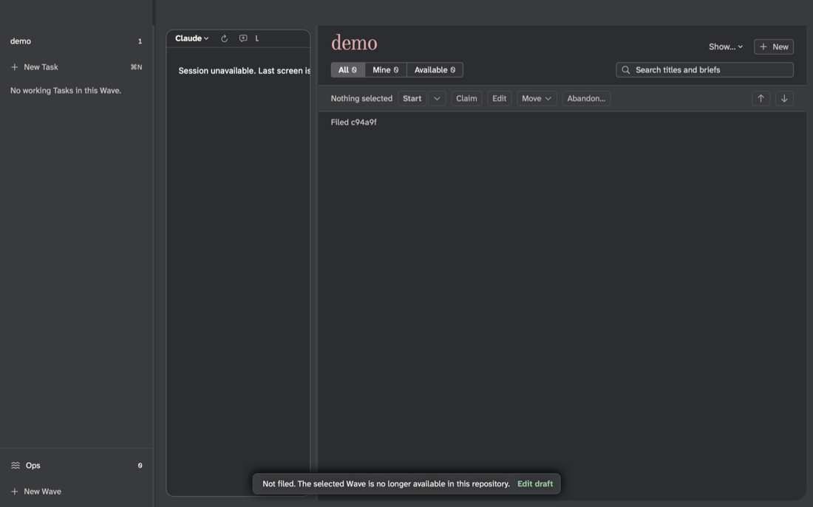
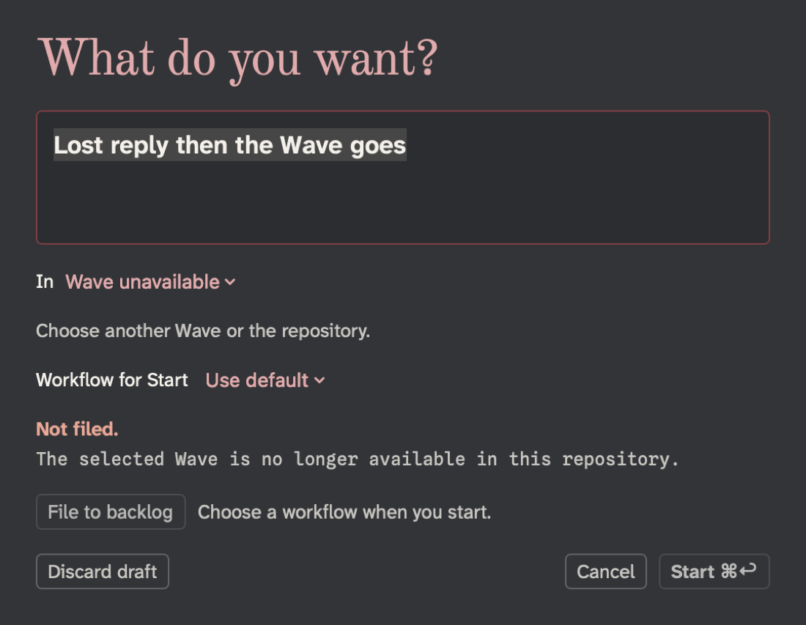
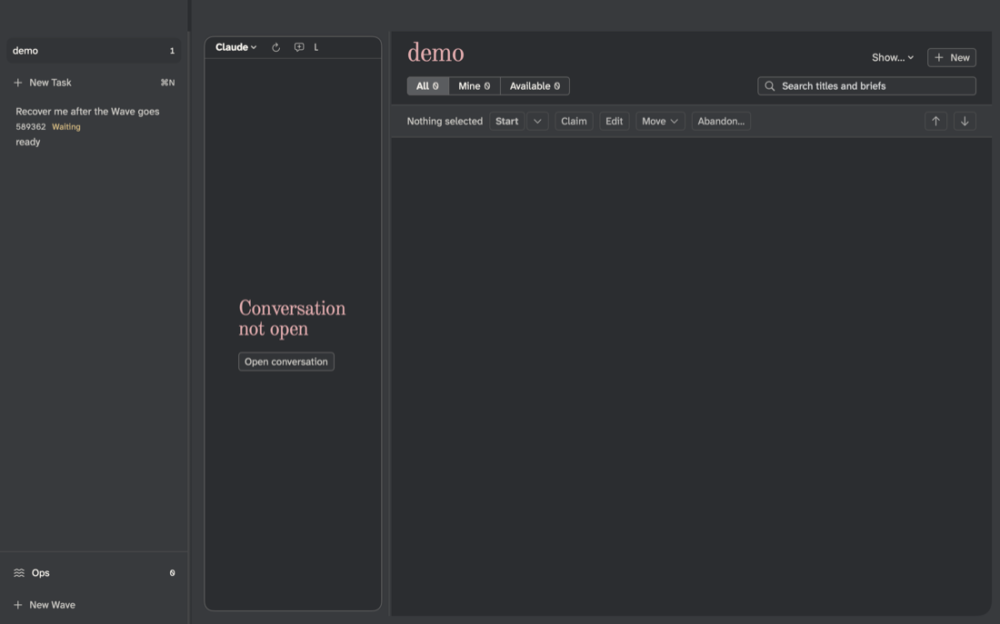
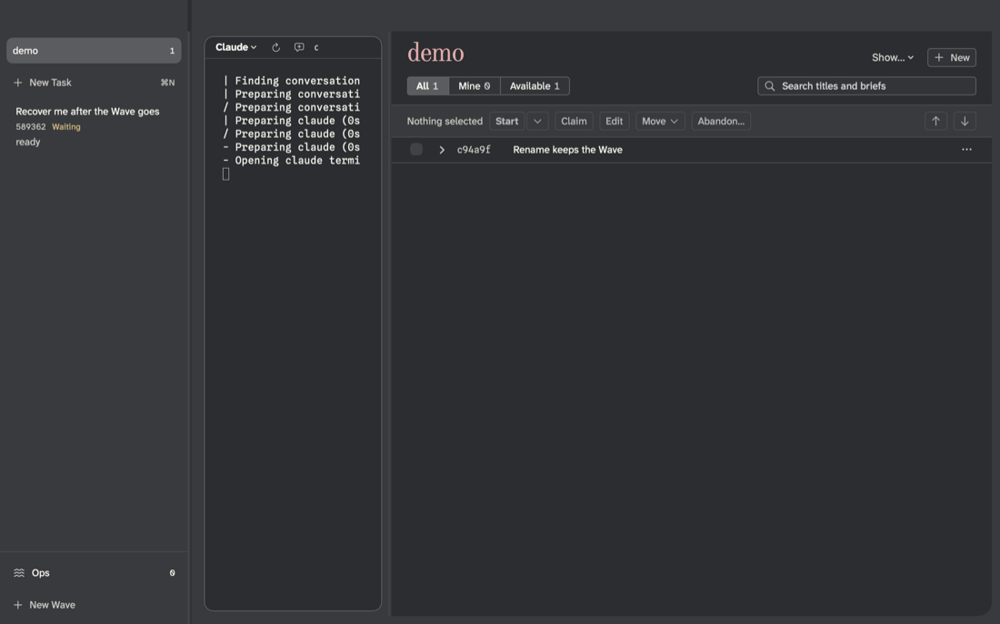

Built from 32f1e69bd5 as an isolated Dev bundle (com.loopflow.mac.qa1065.dev) on a private Machine at /tmp/q1065: its own HOME and LF_HOME, the branch lf server run, a stand-in claude. Repository demo defaults to Graph qa. Waves Later and Ops; Ops defaults to review. Someone was using the display, so the app ran behind their windows (open -n -g) and was driven through .lf/qa/QAHook.swift. This round covers what changed after round 2: Wave IDs in the sheet, refusals at admission, and Edit draft recovery.
Opened Later by link, then New Task, and typed words. With the sheet open, I ran lf wave rename Later Someday. The sheet changed to "In Someday · qa · Someday's default". File put c94a9f in Wave 5e55d600, the same ID, and opened the Someday backlog with the row selected.


With the sheet open in Ops, I removed Ops and created a new Ops. The sheet changed to Wave unavailable and "Choose another Wave or the repository." The workflow reset to Use default, and File and Start were disabled. ⌘↩ was unhandled and created no Task. Esc closed the sheet.

I sent SIGSTOP to the server and pressed ⌘↩. The sheet showed Starting… for 60 s and then "Not started. Loopflow server did not answer in time; check `lf server status`", with the draft intact and nothing in the journal. Start reads the Machine ID before saving, and that read has a 60 s deadline. Esc does nothing during Starting…; Cancel is shown enabled. After a resume, ⌘↩ admitted the Task and opened it.


To lose a reply after the journal write, I put a git wrapper on the server's PATH that blocks while a flag file exists. File from Someday saved the journal and sent the request, and the server's git calls hung. I killed the server, which rolled back admission (no Task), then ran lf wave remove Someday and restarted the server. The sheet had closed on the uncertain answer. Recovery replayed the request and the journal recorded the refusal not_found "The selected Wave is no longer available in this repository." with the Wave ID.
The notice read "Not filed. The selected Wave is no longer available in this repository. Edit draft". Edit draft reopened the sheet with the words, Wave unavailable, Use default, the refusal line and Discard draft. Cancel kept the draft and the notice. After an app restart the notice came back, and Edit draft still worked.


Discard draft answered no hook click, in four tries at different points; Cancel in the same row did. A temporary log in its action showed it never ran. With role: .destructive removed for one build, the first click ran it: the journal file and the notice went away. My reading is that the hook's windows are never key and a destructive-role button refuses a first click there. A real click on the key sheet could not be tried with the display in use. NewTaskTests taps the same button with ViewInspector, which calls the action without hit testing. The role stays as committed.
After Someday was removed, the window stayed on its ID (lf desktop state: kind: wave, id: 5e55d600…), across an app restart too. The page reads "demo", All 0, an empty list, and the sidebar reads "No working Tasks in this Wave." c94a9f had moved to the repository. Clicking the demo row showed it there. The same page on the right below.


Two rules on main produce this. clearSelectionIfOutsideScope keeps a selection that a Session still names, and the removed Wave's conversation stays in history (WorkModel.swift:3217). The backlog heading falls back to the repository's name when the Wave is missing (WorkModel.swift:1053). This affects New Task recovery because a refused replay usually means the Wave was removed while someone was looking at it. What a removed Wave's page should show is a product choice, so I left it.
lf and Dev bundle, this run.scratch/plan.md; I didn't rerun them because this round changed no product code.Menu; the hook can't open them). Choosing a named workflow, correcting with Use default, and picking the repository after Wave unavailable, then File or Start under a fresh request ID, stay with NewTaskTests and an unlocked demo.Round 2 (3860c90233) drove a refused Start, File across a server restart with the brief opening while the Machine was away, removing the sheet's Wave while it was open, and an admitted Start from Ops. It fixed Wave links, which carried a name while Desktop selected Waves by ID.